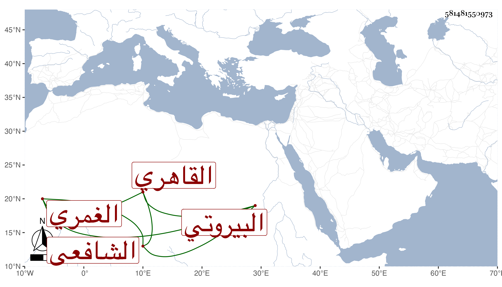

0902Sakhawi.DawLamic.ITO20230111-ara1.EIS1600.581481550973
Biography ID: 581481550973
487
حسن بن محمد بن علي البيروتي ثم الغمري القاهري البطيخي الشافعي . ممن أخذ عن الشرف السبكي وشيخنا وجاد فهمه دون عبارته ، وصحب الغمري واختص به وبعد موته لزم ولده قليلا مع الاشتغال بالعربية والفقه وغيرهما ثم انسلخ من ذلك كله وسلك مسالك السوقة وباع القصب والبطيخ ونحوها واستمر يتناقص حتى مات في تاسع رمضان سنة إحدى وتسعين بعد أن كف وقطن جامع الغمري وقد جاز الستين رحمه الله وعوضه خيرا .
